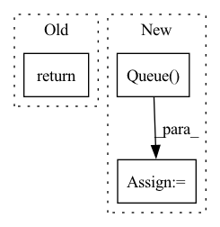

Pattern ID :40883
Before Change
self.doc_model = SentenceTransformer(model_path[1])
def start_multi_process_pool(self, target_devices: List[str] = None) -> Dict[str, object]:
return self.doc_model.start_multi_process_pool(target_devices=target_devices)
def stop_multi_process_pool(self, pool: Dict[str, object]):
output_queue = pool["output"]After Change
logger.info("Start multi-process pool on devices: {}".format(", ".join(map(str, target_devices))))
ctx = mp.get_context("spawn")
input_queue = ctx.Queue()
output_queue = ctx.Queue()
processes = []
for process_id, device_name in enumerate(target_devices):In pattern: SUPERPATTERN
Frequency: 4
Non-data size: 3
Instances Fragment ID: 115279503
Project Name: ukplab/beir
Commit Name: d858a38384efabf6ef5992cfe454745d884c1055
Time: 2022-06-15
Author: nouamane98@gmail.com
File Name: beir/retrieval/models/sentence_bert.py
M Class Name: SentenceBERT
N Class Name: SentenceBERT
M Method Name: start_multi_process_pool(2)
N Method Name: start_multi_process_pool(2)
M Parent Class:
N Parent Class:
M File Name: beir/retrieval/models/sentence_bert.py
N File Name: beir/retrieval/models/sentence_bert.py
M Start Line: 25
M End Line: 25
N Start Line: 26
N End Line: 38
Before Change
finally:
if stat.count > 0:
return (stat.average, stat.max)
return (0, 0)
//////////////////////////////////////////////////////////////////////////////////////////////////////////////////////////////////////////////////////////////
After Change
self.queue_put_stoppable(self.q_dist, ditance_error)
q = queue.Queue()
q_dist = queue.Queue()
threads = [Worker(f, q, q_dist) for f in predictors]
for k in threads: Fragment ID: 115279495
Project Name: gml16/rl-medical
Commit Name: 2d903de1af7d2b239a1b5ccee77d05befee8db86
Time: 2017-11-01
Author: aa16914@wensum.doc.ic.ac.uk
File Name: examples/LandmarkDetection3D/DQN/common.py
M Class Name: AnonimousClass
N Class Name: AnonimousClass
M Method Name: eval_with_funcs(4)
N Method Name: eval_with_funcs(4)
M Parent Class:
N Parent Class:
M File Name: examples/LandmarkDetection3D/DQN/common.py
N File Name: examples/LandmarkDetection3D/DQN/common.py
M Start Line: 78
M End Line: 100
N Start Line: 93
N End Line: 124
Before Change
finally:
if stat.count > 0:
return (stat.average, stat.max)
return (0, 0)
//////////////////////////////////////////////////////////////////////////////////////////////////////////////////////////////////////////////////////////////
After Change
self.queue_put_stoppable(self.q_dist, ditance_error)
q = queue.Queue()
q_dist = queue.Queue()
threads = [Worker(f, q, q_dist) for f in predictors]
for k in threads:
k.start()
time.sleep(0.1) // avoid simulator bugs
stat = StatCounter()
dist_stat = StatCounter()
for _ in tqdm(range(nr_eval), **get_tqdm_kwargs()):
r = q.get()
stat.feed(r)
dist = q_dist.get()
dist_stat.feed(dist)
logger.info("Waiting for all the workers to finish the last run...") Fragment ID: 115279506
Project Name: gml16/rl-medical
Commit Name: 249c649721c645c497311bacc239a3d6a448851e
Time: 2018-01-09
Author: aa16914@wensum.doc.ic.ac.uk
File Name: examples/plane_detection/ultrasound_fetal_brain_detection/common.py
M Class Name: AnonimousClass
N Class Name: AnonimousClass
M Method Name: eval_with_funcs(4)
N Method Name: eval_with_funcs(4)
M Parent Class:
N Parent Class:
M File Name: examples/plane_detection/ultrasound_fetal_brain_detection/common.py
N File Name: examples/plane_detection/ultrasound_fetal_brain_detection/common.py
M Start Line: 78
M End Line: 100
N Start Line: 93
N End Line: 124